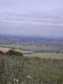
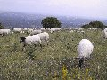
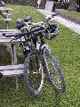
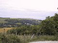
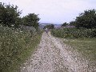
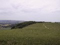
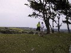

Jane
The view
Sheep
Time for a rest
Another view

Jeremy stopped for a breather
Jeremy in motion
View from Chanctonbury Hill
Jane and Jeremy at Chanctonbury Hill
Jeremy consults the map
All done in
As Jeremy and I are on our redundancy notice period we thought we'd take a day out to go and cycle some of the South Downs Way. So, we hopped on a train from Brighton to Amberley, and made our way back.
We had the 2 relevant Ordnance Survey maps (Explorer 121 and Explorer 122), and I'd transcribed the description of the route from Rich's copy of Great Cycle Routes: the North and South Downs. Between these items, and the generally excellent signposts (although some have disappeared amongst leaves in places) we were able to find out way without much of a problem.
It was hard work, but I'm glad I've done it. I'm not sure I could face doing the South Downs Way continuously though, I think I need some time to rest and recover now.
(11 images.)|
Jane | 
The view | 
Sheep | 
Time for a rest |
| 
Another view |
Jeremy stopped for a breather | 
Jeremy in motion | 
View from Chanctonbury Hill |
| 
Jane and Jeremy at Chanctonbury Hill |
Jeremy consults the map |
All done in |